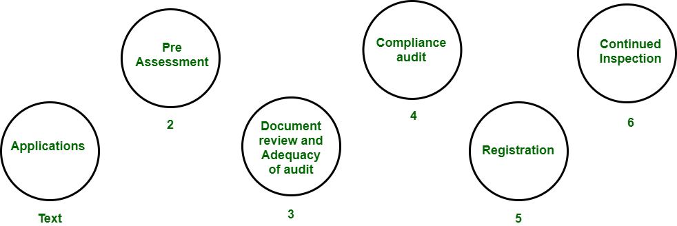

8.6 ISO 9000 Certification / Models
The ISO 9000 family is a set of international standards for Quality Management Systems (QMS) published by the International Organization for Standardization. Unlike product-quality models (McCall, ISO 9126), ISO 9000 certifies that an organisation's processes for producing goods or services meet defined quality management requirements — it does not certify the product itself.

What ISO 9000 covers
- ISO 9000 standards provide guidelines and requirements for establishing, implementing, maintaining, and continually improving a Quality Management System.
- They focus on the production process — how work is planned, executed, monitored, and improved — rather than evaluating individual products.
- Certification is awarded by accredited third-party auditors who verify that the organisation's QMS conforms to the standard.
- ISO 9000 applies to any industry; for software, the companion standard ISO/IEC/IEEE 90003:2018 provides guidance on applying ISO 9001 requirements specifically to software development and maintenance.
Why the software industry needs ISO 9000
- Software is intangible and its quality cannot be inspected like physical goods — process assurance is essential.
- Clients and government contracts often require ISO 9001 certification as a prerequisite for vendor selection.
- Certification demonstrates to customers that the organisation follows documented, repeatable, and auditable development processes.
- It provides a common language and framework for quality management that is recognised internationally.
- It complements technical quality models (ISO 9126/25010) by ensuring the processes that produce software are themselves controlled.
ISO 9001 requirements
ISO 9001:2015 is the certifiable standard within the ISO 9000 family. Key requirements include:
- Document control: All quality-related documents must be approved, reviewed, updated, and distributed under controlled procedures.
- Planning: Quality objectives must be planned, resourced, and aligned with customer requirements.
- Review: Management reviews the QMS periodically; design and development reviews occur at defined stages.
- Testing and validation: Products and services must be verified and validated before delivery to the customer.
- Organisational aspects: Management commitment, defined roles and responsibilities, competence of personnel, and infrastructure provision.
Five components of a Quality Management System
| Component | Description |
|---|---|
| Quality Management System (QMS) | The overall framework of policies, procedures, and records that define how quality is managed |
| Management responsibility | Top management demonstrates commitment, sets quality policy, and conducts management reviews |
| Resource management | Human resources, infrastructure, and work environment are provided and maintained to support quality objectives |
| Product realization | Planning, design, development, purchasing, production, and service delivery follow controlled processes |
| Measurement, analysis, and improvement | Monitoring customer satisfaction, internal audits, data analysis, corrective/preventive action, and continual improvement |
Seven quality management principles (ISO 9001:2015)
- Customer focus: Organisations depend on customers and should understand and meet current and future customer needs.
- Leadership: Leaders establish unity of purpose and create conditions in which people are engaged in achieving quality objectives.
- Engagement of people: Competent, empowered, and engaged people at all levels are essential to deliver value.
- Process approach: Consistent and predictable results are achieved more effectively when activities are managed as interrelated processes.
- Improvement: Successful organisations have an ongoing focus on improvement.
- Evidence-based decision making: Decisions based on the analysis and evaluation of data are more likely to produce desired results.
- Relationship management: Organisations manage relationships with interested parties (suppliers, partners) for sustained success.
ISO/IEC/IEEE 90003:2018 for software
- This standard maps ISO 9001:2015 requirements to software development, supply, and maintenance contexts.
- It provides guidance on applying QMS requirements to software lifecycle processes, including requirements management, design, coding, testing, and configuration management.
- Software organisations seeking ISO 9001 certification typically use 90003 as the interpretive guide for audit preparation.
Implementation steps
Organisations typically follow eight steps to achieve ISO 9001 certification:
- Gap analysis: Compare current practices against ISO 9001 requirements to identify deficiencies.
- Management commitment: Secure top-management support and allocate resources for the certification effort.
- QMS design: Document quality policy, objectives, procedures, and work instructions.
- Training: Educate all staff on QMS requirements and their individual responsibilities.
- Implementation: Deploy the QMS across all relevant departments and projects.
- Internal audit: Conduct internal audits to verify compliance and identify non-conformances.
- Management review: Senior management reviews audit results and approves corrective actions.
- External certification audit: An accredited certification body performs a two-stage audit and awards certification if compliant.
Exam points — limitations of ISO 9000
- ISO 9000 certifies process compliance, not product quality — a certified organisation can still produce defective software if the process is followed but inadequate.
- Certification is expensive and time-consuming, requiring extensive documentation and ongoing audit maintenance.
- The standard is generic — it applies to all industries, so software-specific guidance (90003) is needed for meaningful application.
- Certification can become a paperwork exercise if the organisation focuses on passing audits rather than genuinely improving quality.
- ISO 9000 does not address process maturity levels the way CMMI does — it is pass/fail, not staged.
Q: What is ISO 9000? Why does the software industry need it? Describe the five QMS components and seven quality management principles.
Model answer points:
- ISO 9000 = international QMS standards; certifies processes, not products.
- Software needs it because quality is process-dependent; clients require certification; provides auditable framework.
- ISO 9001:2015 = certifiable standard; requirements: document control, planning, review, testing, org aspects.
- Five QMS components: QMS itself, management responsibility, resource management, product realization, measurement/analysis/improvement.
- Seven principles: customer focus, leadership, engagement of people, process approach, improvement, evidence-based decisions, relationship management.
- ISO/IEC/IEEE 90003:2018 = software-specific application guide.
- Limitations: process not product; expensive; generic; can become paperwork exercise; no maturity levels.